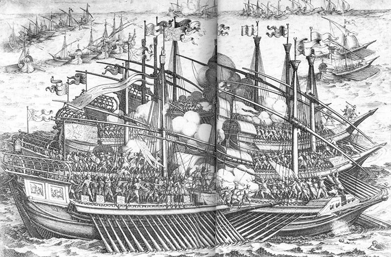

Морское сражение галер Фердинанда I с галерами мусульман в1537 году. С гравюры Ж.Калло. (К сожалению свойства моего планшетного сканера не позволяют добиться лучшего качества в месте разворота иллюстрации из толстой книги.)
В предыдущих заметках, посвященных работе Саверьена, мы обещали дать приведенные в его Dictionnaire historique, théorique et pratique de marine список членов экипажа галеаса (не включая сюда офицерский состав). Этот список относится к «усредненному» галеасу и конкретными документами не подкреплен.
Экипаж
Гребцы
Комиты
Подкомиты
Аргузины
Рулевые
Матросы
Старшие канониры
Помощники канониров 20
Капитаны армейского десанта 2
Сержанты
Капралы
Солдаты
Всего членов экипажа, без учета офицеров 768